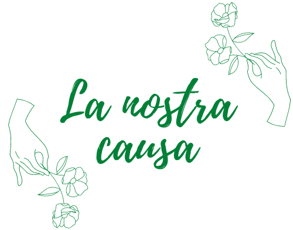
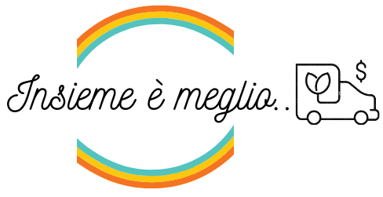

Questo progetto è nato dalla consapevolezza che il mondo sta cambiando, e non per volere di Madre Natura ma a causa di nostri sprechi e comportamenti scorretti.
È ormai noto che la maggior parte dei materiali utilizzati per l’imballaggio di prodotti alimentari avvenga attraverso la plastica: è la soluzione corretta?
Come possiamo renderci utili noi, nel nostro piccolo, per aiutare il mondo a “respirare”?
Per esempio iniziando ad ordinare con All in Green!
All in Green nasce nel 2017 nel cuore di Milano dall’idea di due studentesse universitarie. È una cooperativa in continua espansione creata a partire da una necessità di voler far parte di questo cambiamento mondiale.


Perchè non iniziare proprio dai pasti da gustare da soli o in compagnia?
Rispettare l’ambiente non significa a rinunciare alla comodità! Packaging in bambù o in carta, posate di legno, bottigliette di vetro e tanto altro. Per non parlare invece dei prodotti! I prodotti distribuiti dai nostri negozi sono tutti a km zero provenienti da cascine dell’hinterland Milanese e sono tutte produzioni biologiche creando così una rete di genuinità pronta da essere gustata!